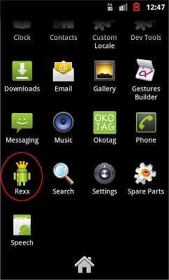
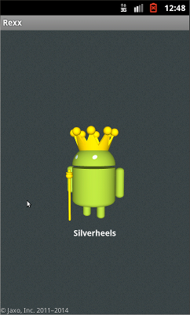
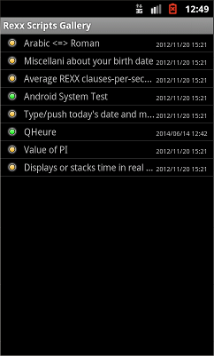
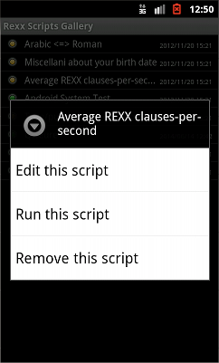
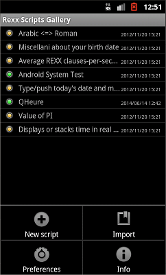
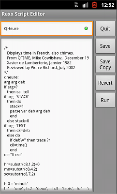
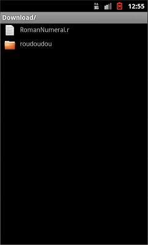

|  |
 |
 |
REXX king on the home page,
after install |
REXX initial splash screen... |
... soon followed by the gallery,
already filled with a few samples
if 'green', the script was validated
|
|
|  |
 |
 |
A long press on an item
and the context menu pops up |
Press on the menu bar
to show options |
Tap on an itemto edit the script
|
|
 |
 |
> |
| Running the REXX script |
From the options, "import" lets you
get a REXX script you downloaded
(using, for example, a mail attachment)
| |